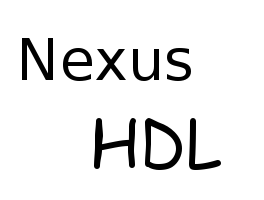

Powered by Eclipse Technology
Copyright � 2010 Michael Bodenbach. All rights reserved.
Contact: info@blablabla.com
NexusHDL is powered by Eclipse technology and includes Eclipse plug-ins that can be installed and used with other Eclipse based offerings.